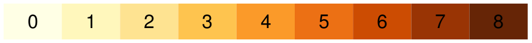
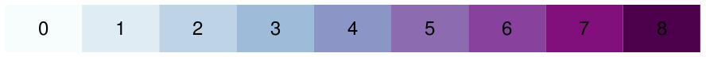
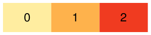

colormaps – Additional Colormaps for the Racket Plot Package
The plot package introduced support for color maps using the plot-pen-color-map and plot-brush-color-map and they allow producing visually atractive plots by using pre-selected colors which work well together.
Several color maps are defined inside the plot package plus additional ones can be defined using register-color-map. This package defines additional color maps to be used with the plot pakage.
1 Using Colormaps
To use color maps for plots, set the a color map using plot-pen-color-map and use integer indexes for #:color argument of various plot renderers. For example, this code will produce the plot below and changing the argument of plot-pen-color-map will automatically change the colors of the plot:
(require plot) (parameterize ([plot-pen-color-map 'set1]) (plot (list (function sin -5 5 #:color 0) (function cos -5 5 #:color 1))))
The color-map-names function can be used to retrieve the list of installed color maps and you can use the pp-color-map and pp-color-maps functions to inspect the colors available in a color map. Here are all the colors from the 'set1 color map used in the previous plot:

Color maps were designed for use with the plot package, and retrieving individual colors from a color map is perhaps unnecessarily complicated. You can use ->pen-color for this purpose like so:
(match-define (list red green blue) (parameterize ([plot-pen-color-map 'set1]) (->pen-color 0)))
2 Colormaps Defined in this Package
2.1 Paul Tol’s Colormaps
| (require colormaps/tol) | package: colormaps |
The color maps defined in colormaps/tol are based on Paul Tol’s color schemes, see the link for more detailed description about the design of these color maps and their intented uses.
Requiring the colormaps/tol or colormaps modules will automatically register these color maps for use.
2.1.1 TOL Qualitative
Qualitative Colour Maps should be used for nominal or categorical data, where magnitude differences are not relevant, for example lines in plots. The following qualitative color maps are defined:
Tag | Name | Colors |
'tol-bq | Bright | |
'tol-hcq | High Contrast |
|
'tol-vq | Vibrant | |
'tol-mq | Muted | |
'tol-pq | Pale | |
'tol-dq | Dark | |
'tol-lq | Light |

2.1.2 TOL Diverging
Diverging Colour Maps should be used for data that is ordered between two extremes where the midpoint is important (e.g. positive and negative deviations from a mean value). The following diverging colour maps are defined:
Tag | Name | Colors |
'tol-sd | Sunset | |
'tol-bd | BuRd | |
'tol-pd | PRGn |
2.1.3 TOL Sequential
Sequential Colour Maps should be used for data that is ordered from a low to a high value. The following sequential color maps are defined:
Tag | Name | Colors |
'tol-ys | YlOrBr |  |
'tol-is | Iridescent |
2.1.4 TOL Rainbow
procedure
(make-tol-rainbow-colormap color-count [ #:register? register? #:name name]) → (listof (list integer? integer? integer?)) color-count : exact-positive-integer? register? : boolean? = #f name : (or/c #f symbol?) = #f
The color scheme is constructed as described Paul Tol’s notes about sequential color schemes. For color schemes up to 29 colors, the colors are selected from a discrete color palette, for larger number of colours the colours are interpolated.
When register? is #t, the color map will be registered using register-color-map using either a generated name or an user supplied one.
name specifies the name of the color scheme to use when registering it. When #f, a default name will be created by appending the number of colors to the symbol 'tol-rainbow. For example, the default name for a 10 color rainbow will be 'tol-rainbow-10.
Here are the first 10 color schemes created by calling make-tol-rainbow-colormap with arguments from 1 to 10. The function can generate color maps with larger number of colors as well, but the larger the number of colors, the less distinct adjacent ones will be.
Tag | Colors |
'tol-rainbow-1 | |
'tol-rainbow-2 | |
'tol-rainbow-3 | |
'tol-rainbow-4 | |
'tol-rainbow-5 | |
'tol-rainbow-6 | |
'tol-rainbow-7 | |
'tol-rainbow-8 | |
'tol-rainbow-9 | |
'tol-rainbow-10 |
2.2 ColorBrewer 2.0 Colormaps
| (require colormaps/cb) | package: colormaps |
The color maps defined in colormaps/cb are based on Color Brewer 2.0 color schemes, see the link for more detailed description about the design of these color maps and their intented uses. Note that the qualitative color maps provided by Color Brewer are already provided as part of the default color maps provided by the plot package itself, this module defines the sequential and diverging color schemes, as well as one additional qualitative color map.
Requiring the colormaps/cb or colormaps modules will automatically register these color maps for use.
2.2.1 CB Qualitative
Qualitative Colour Maps should be used for nominal or categorical data, where magnitude differences are not relevant, for example lines in plots. The package provides one color map in this category:
Tag | Name | Colors |
'cb-accent | Accent |
2.2.2 CB Diverging
Diverging Colour Maps should be used for data that is ordered between two extremes where the midpoint is important (e.g. positive and negative deviations from a mean value). Several color maps are defined for the same hue change and an appropiate color map should be used based on the number of categories in the data. For example, if there are 5 categories in the data, use the 'cb-brbg-5 color map, but for 7 categories, use the 'cb-brbg-7.
Tag | Colors |
'cb-brbg-3 | |
'cb-brbg-4 | |
'cb-brbg-5 | |
'cb-brbg-6 | |
'cb-brbg-7 | |
'cb-brbg-8 | |
'cb-brbg-9 | |
'cb-brbg-10 | |
'cb-brbg-11 |
Tag | Colors |
'cb-piyg-3 | |
'cb-piyg-4 | |
'cb-piyg-5 | |
'cb-piyg-6 | |
'cb-piyg-7 | |
'cb-piyg-8 | |
'cb-piyg-9 | |
'cb-piyg-10 | |
'cb-piyg-11 |
Tag | Colors |
'cb-prgn-3 | |
'cb-prgn-4 | |
'cb-prgn-5 | |
'cb-prgn-6 | |
'cb-prgn-7 | |
'cb-prgn-8 | |
'cb-prgn-9 |
|
'cb-prgn-10 | |
'cb-prgn-11 |

Tag | Colors |
'cb-puor-3 | |
'cb-puor-4 | |
'cb-puor-5 | |
'cb-puor-6 | |
'cb-puor-7 | |
'cb-puor-8 | |
'cb-puor-9 | |
'cb-puor-10 | |
'cb-puor-11 |
Tag | Colors |
'cb-rdbu-3 | |
'cb-rdbu-4 | |
'cb-rdbu-5 | |
'cb-rdbu-6 |
|
'cb-rdbu-7 | |
'cb-rdbu-8 | |
'cb-rdbu-9 | |
'cb-rdbu-10 | |
'cb-rdbu-11 |
|


Tag | Colors |
'cb-rdgy-3 | |
'cb-rdgy-4 | |
'cb-rdgy-5 | |
'cb-rdgy-6 | |
'cb-rdgy-7 | |
'cb-rdgy-8 | |
'cb-rdgy-9 | |
'cb-rdgy-10 |
|
'cb-rdgy-11 |
|


Tag | Colors |
'cb-rdylbu-3 | |
'cb-rdylbu-4 | |
'cb-rdylbu-5 | |
'cb-rdylbu-6 | |
'cb-rdylbu-7 | |
'cb-rdylbu-8 |
|
'cb-rdylbu-9 | |
'cb-rdylbu-10 | |
'cb-rdylbu-11 |

Tag | Colors |
'cb-rdylgn-3 | |
'cb-rdylgn-4 | |
'cb-rdylgn-5 | |
'cb-rdylgn-6 | |
'cb-rdylgn-7 | |
'cb-rdylgn-8 | |
'cb-rdylgn-9 | |
'cb-rdylgn-10 | |
'cb-rdylgn-11 |
Tag | Colors |
'cb-spectral-3 | |
'cb-spectral-4 | |
'cb-spectral-5 | |
'cb-spectral-6 | |
'cb-spectral-7 | |
'cb-spectral-8 | |
'cb-spectral-9 | |
'cb-spectral-10 | |
'cb-spectral-11 |
2.2.3 CB Multi-Hue Sequential
Sequential Colour Maps should be used for data that is ordered from a low to a high value, the package provides both single-hue and multi hue color maps. Several color maps are defined for the same hue change and an appropiate color map should be used based on the number of categories in the data. For example, if there are 5 categories in the data, use the 'cb-bugn color map, but for 7 categories, use the 'cb-bugn-7.
Tag | Colors |
'cb-bugn-3 | |
'cb-bugn-4 | |
'cb-bugn-5 | |
'cb-bugn-6 | |
'cb-bugn-7 | |
'cb-bugn-8 | |
'cb-bugn-9 |
Tag | Colors |
'cb-bupu-3 | |
'cb-bupu-4 | |
'cb-bupu-5 | |
'cb-bupu-6 | |
'cb-bupu-7 | |
'cb-bupu-8 | |
'cb-bupu-9 |  |
Tag | Colors |
'cb-gnbu-3 | |
'cb-gnbu-4 | |
'cb-gnbu-5 | |
'cb-gnbu-6 | |
'cb-gnbu-7 | |
'cb-gnbu-8 | |
'cb-gnbu-9 |
Tag | Colors |
'cb-orrd-3 | |
'cb-orrd-4 | |
'cb-orrd-5 | |
'cb-orrd-6 | |
'cb-orrd-7 | |
'cb-orrd-8 | |
'cb-orrd-9 |
Tag | Colors |
'cb-pubu-3 | |
'cb-pubu-4 | |
'cb-pubu-5 | |
'cb-pubu-6 | |
'cb-pubu-7 | |
'cb-pubu-8 | |
'cb-pubu-9 |
Tag | Colors |
'cb-pubugn-3 |
|
'cb-pubugn-4 | |
'cb-pubugn-5 |
|
'cb-pubugn-6 | |
'cb-pubugn-7 | |
'cb-pubugn-8 | |
'cb-pubugn-9 |


Tag | Colors |
'cb-purd-3 | |
'cb-purd-4 | |
'cb-purd-5 | |
'cb-purd-6 | |
'cb-purd-7 | |
'cb-purd-8 | |
'cb-purd-9 |
Tag | Colors |
'cb-rdpu-3 | |
'cb-rdpu-4 | |
'cb-rdpu-5 | |
'cb-rdpu-6 | |
'cb-rdpu-7 | |
'cb-rdpu-8 | |
'cb-rdpu-9 |
Tag | Colors |
'cb-ylgn-3 | |
'cb-ylgn-4 | |
'cb-ylgn-5 | |
'cb-ylgn-6 | |
'cb-ylgn-7 | |
'cb-ylgn-8 | |
'cb-ylgn-9 |
Tag | Colors |
'cb-ylgnbu-3 | |
'cb-ylgnbu-4 | |
'cb-ylgnbu-5 | |
'cb-ylgnbu-6 | |
'cb-ylgnbu-7 |
|
'cb-ylgnbu-8 | |
'cb-ylgnbu-9 |

Tag | Colors |
'cb-ylorbr-3 | |
'cb-ylorbr-4 | |
'cb-ylorbr-5 | |
'cb-ylorbr-6 | |
'cb-ylorbr-7 |
|
'cb-ylorbr-8 | |
'cb-ylorbr-9 |

Tag | Colors |
'cb-ylorrd-3 |  |
'cb-ylorrd-4 | |
'cb-ylorrd-5 | |
'cb-ylorrd-6 | |
'cb-ylorrd-7 | |
'cb-ylorrd-8 | |
'cb-ylorrd-9 |
2.2.4 CB Single-Hue Sequential
Tag | Colors |
'cb-blues-3 |
|
'cb-blues-4 | |
'cb-blues-5 | |
'cb-blues-6 | |
'cb-blues-7 | |
'cb-blues-8 | |
'cb-blues-9 |

Tag | Colors |
'cb-greens-3 | |
'cb-greens-4 | |
'cb-greens-5 | |
'cb-greens-6 | |
'cb-greens-7 | |
'cb-greens-8 | |
'cb-greens-9 |
Tag | Colors |
'cb-greys-3 | |
'cb-greys-4 | |
'cb-greys-5 | |
'cb-greys-6 | |
'cb-greys-7 | |
'cb-greys-8 | |
'cb-greys-9 |
Tag | Colors |
'cb-oranges-3 | |
'cb-oranges-4 | |
'cb-oranges-5 | |
'cb-oranges-6 | |
'cb-oranges-7 |
|
'cb-oranges-8 | |
'cb-oranges-9 |
|


Tag | Colors |
'cb-purples-3 | |
'cb-purples-4 | |
'cb-purples-5 |
|
'cb-purples-6 | |
'cb-purples-7 | |
'cb-purples-8 | |
'cb-purples-9 |

Tag | Colors |
'cb-reds-3 | |
'cb-reds-4 | |
'cb-reds-5 | |
'cb-reds-6 | |
'cb-reds-7 | |
'cb-reds-8 | |
'cb-reds-9 |
3 Colormap Utilities
| (require colormaps/utils) | package: colormaps |
procedure
(pp-color-map name [ #:width width #:height height #:show-text? show-text? #:text-style text-style #:text-size text-size]) → pict? name : symbol? width : (or/c #f positive?) = #f height : positive? = 30 show-text? : boolean? = #t text-style : text-style/c = null text-size : (integer-in 1 1024) = 12
width is the total width of the resulting picture. When f, the width is determined from the number of colors in the color map and the height of each cell. When width is a number, this will be the total width of the pict, and cells will be scalled to fit inside this width.
height is the height of the resulting picture, and the height of each individual color cell.
show-text?, when #t, will label each cell with a number representing the index of the color in the color map. This number can be passd to the #:color parameter of plot renderers to use that color.
text-style is the text style used to render the text inside each cell. Passed to the text pict constructor.
text-size is the text size used to render the text inside each cell. Passed to the text pict constructor.
For example to print the colors for the built-in 'set1 color map, to print out the colors in 'set1, use (pp-color-map 'set1):
procedure
(pp-color-maps names [ #:width width #:height height #:show-text? show-text? #:text-style text-style #:text-size text-size]) → pict? names : ((listof symbol?) (color-map-names)) width : (or/c #f positive?) = #f height : positive? = 30 show-text? : boolean? = #t text-style : text-style/c = null text-size : (integer-in 1 1024) = 12
names defaults to all installed color maps. The width, height, show-text?, text-style and text-size arguments are the same as for pp-color-map.
For example to print the color maps for the built-in 'set1 and 'set2 color maps, use (pp-color-maps '(set1 set2)):